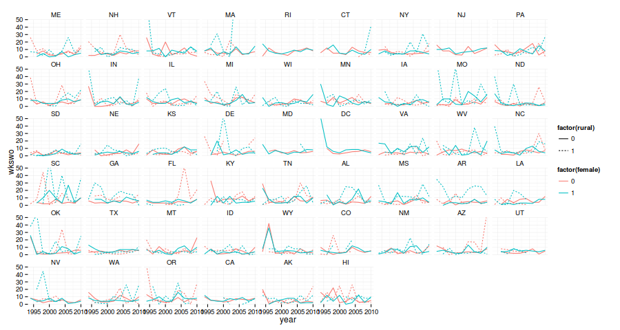

Introduction To Programming In R
Table of Contents
Workshop overview and materials
Workshop description
This is an intermediate/advanced R course appropriate for those with basic knowledge of R. It is intended for those already comfortable with using R for data analysis who wish to move on to writing their own functions. To the extent possible this workshop uses real-world examples. That is to say that concepts are introduced as they are needed for a realistic analysis task. In the course of working through a realistic project we will lean about interacting with web services, regular expressions, iteration, functions, control flow and more.
Prerequisite: basic familiarity with R, such as acquired from an introductory R workshop.
Materials and setup
Everyone should have R installed – if not:
- Open a web browser and go to http://cran.r-project.org/ and download and install it
- Also helpful to install RStudio (download from http://rstudio.com/)
Materials for this workshop include slides, example data sets, and example code.
- Download materials from http://tutorials.iq.harvard.edu/R/RProgramming.zip
- Extract the zip file containing the materials to your desktop
Example project overview
Throughout this workshop we will return to a running example that involves acquiring, processing, and analyzing data from the Displaced Worker Survery (DWS). In this context we will learn about finding and using R packages, importing and manipulating data, writing functions, and more.
Extracting elements from html
It is common for data to be made available on a website somewhere, either by a government agency, research group, or other organizations and entities. Often the data you want is spread over many files, and retrieving it all one file at a time is tedious and time consuming. Such is the case with the CPS data we will be using today.
The Center for Economic and Policy Research has helpfully compiled DWS data going back to 19941. Although we could open a web browser and download these files one at a time, it will be faster and easier to instruct R to do that for us. Doing it this way will also give us an excuse to talk about html parsing, regular expressions, package management, and other useful techniques.
Our goal is to download all the Stata data sets from http://ceprdata.org/cps-uniform-data-extracts/cps-displaced-worker-survey/cps-dws-data/. In order to do that we need a list of the Uniform Resource Locators (URLs) of those files. The URLs we need are right there as links in the ceprdata.org webpage. All we have to do is read that data in a way R can understand.
Packages for parsing html
In order extract the data URls from the ceprdata.org webset we need a package for parsing XML and HTML. How do we find such a package?
- Task views
- https://cran.r-project.org/web/views/WebTechnologies.html
- R package search
- http://www.r-pkg.org/search.html?q=html+xml
- Web search
- https://www.google.com/search?q=R+parse+html+xml&ie=utf-8&oe=utf-8
For parsing html in R I recommend either the xml2 package or the rvest package, with the former being more flexible and the later being more user friendly. Let's use the friendlier one.
Extracting information from web pages with the rvest package
Our first task is to read the web page into R. We can do that using the read_html function. Next we want to find all the links (the <a> tags) and extract their href attributes. To give a better sense of this here is what the html for the 2010 data file link looks like:
<a onclick="_gaq.push(['_trackEvent', 'File','Download', 'cepr_dws_2010_dta']);" href="/wp-content/cps/data/cepr_dws_2010_dta.zip">cepr_dws_2010_dta.zip</a>
We want the href part, i.e., "/wp-content/cps/data/ceprdws2010dta.zip".
We can get all the <a> elements using the html_nodes function, and then extract the href attributes usig the html_attr function, like this:
## install.packages("rvest") library(rvest) ## read the web page into R dataPage <- read_html("http://ceprdata.org/cps-uniform-data-extracts/cps-displaced-worker-survey/cps-dws-data/") ## find the link ("a") elements. allAnchors <- html_nodes(dataPage, "a") head(allAnchors, 15) ## extract the link ("href") attributes allLinks <- html_attr(allAnchors, "href") head(allLinks, 15)
> ## install.packages("rvest")
> library(rvest)
>
> ## read the web page into R
> dataPage <- read_html("http://ceprdata.org/cps-uniform-data-extracts/cps-displaced-worker-survey/cps-dws-data/")
>
> ## find the link ("a") elements.
> allAnchors <- html_nodes(dataPage, "a")
> head(allAnchors, 15)
{xml_nodeset (15)}
[1] <a href="http://ceprdata.org/" title="Home" rel="home">\n <img src="http://s4 ...
[2] <a href="http://ceprdata.org/wp-login.php">Log in</a>
[3] <a href="http://www.ceprdata.org">Home</a>
[4] <a href="http://ceprdata.org/cps-uniform-data-extracts/">CPS</a>
[5] <a href="http://ceprdata.org/sipp-uniform-data-extracts/">SIPP</a>
[6] <a href="http://ceprdata.org/acs-uniform-data-extracts/">ACS</a>
[7] <a href="http://ceprdata.org/other-data/">Other Data</a>
[8] <a href="http://ceprdata.org/publications/">Publications</a>
[9] <a href="http://ceprdata.org/contact/">Contact</a>
[10] <a href="https://org.salsalabs.com/o/967/p/salsa/donation/common/public/?donat ...
[11] <a rel="bookmark" href="http://ceprdata.org/cps-uniform-data-extracts/cps-disp ...
[12] <a onclick="_gaq.push(['_trackEvent', 'File','Download', 'cepr_dws_2010_dta']) ...
[13] <a onclick="_gaq.push(['_trackEvent', 'File','Download', 'cepr_dws_2008_dta']) ...
[14] <a onclick="_gaq.push(['_trackEvent', 'File','Download', 'cepr_dws_2006_dta']) ...
[15] <a onclick="_gaq.push(['_trackEvent', 'File','Download', 'cepr_dws_2004_dta']) ...
>
> ## extract the link ("href") attributes
> allLinks <- html_attr(allAnchors, "href")
> head(allLinks, 15)
[1] "http://ceprdata.org/"
[2] "http://ceprdata.org/wp-login.php"
[3] "http://www.ceprdata.org"
[4] "http://ceprdata.org/cps-uniform-data-extracts/"
[5] "http://ceprdata.org/sipp-uniform-data-extracts/"
[6] "http://ceprdata.org/acs-uniform-data-extracts/"
[7] "http://ceprdata.org/other-data/"
[8] "http://ceprdata.org/publications/"
[9] "http://ceprdata.org/contact/"
[10] "https://org.salsalabs.com/o/967/p/salsa/donation/common/public/?donate_page_KEY=1809"
[11] "http://ceprdata.org/cps-uniform-data-extracts/cps-displaced-worker-survey/cps-dws-data/"
[12] "/wp-content/cps/data/cepr_dws_2010_dta.zip"
[13] "/wp-content/cps/data/cepr_dws_2008_dta.zip"
[14] "/wp-content/cps/data/cepr_dws_2006_dta.zip"
[15] "/wp-content/cps/data/cepr_dws_2004_dta.zip"
>
Just the data please – regular expressions to the rescue
Looking at the output from the previous example you might notice a problem; we've matched all the URLs on the web page. Some of those (the ones that end in .zip) are the ones we want, others are menu links that we don't want. How can we separate the data links from the other links on the page?
One answer is to use regular expressions to idenfify the links we want. Regular expressions are useful in general (not just in R!) and it is a good idea to be familiar with at least the basics. For our present purpose it will be more than enough to use regular expression that matches strings starting with /wp and ending with .zip.
In regulars expression ^, ., *, and $ are special characters with the following meanings:
- ^
- matches the beginning of the string
- .
- matches any character
- *
- repeates the last caracter zero or more times
- $
- matches the end of the sring
The backslashes in \\. are used to escape the . so that it is matched literally instead of matching any characters as it normallly would in a regular expression.
If you have not been introduced to regular expressions yet a nice interactive regex tester is available at http://www.regexr.com/ and an interactive tutorial is available at http://www.regexone.com/.
We can use the grep function to match the URLs we want using regular expressions.
dataLinks <- grep("^/wp.*\\.zip$", allLinks, value = TRUE) head(dataLinks)
> dataLinks <- grep("^/wp.*\\.zip$", allLinks, value = TRUE)
> head(dataLinks)
[1] "/wp-content/cps/data/cepr_dws_2010_dta.zip"
[2] "/wp-content/cps/data/cepr_dws_2008_dta.zip"
[3] "/wp-content/cps/data/cepr_dws_2006_dta.zip"
[4] "/wp-content/cps/data/cepr_dws_2004_dta.zip"
[5] "/wp-content/cps/data/cepr_dws_2002_dta.zip"
[6] "/wp-content/cps/data/cepr_dws_2000_dta.zip"
>
Finally, the data links we've extracted are relative to the ceprdata website. To make them valid we need to prepend http://ceprdata.org/ to each one. We can do that using the paste funcion.
dataLinks <- paste("http://ceprdata.org", dataLinks, sep = "") head(dataLinks)
> dataLinks <- paste("http://ceprdata.org", dataLinks, sep = "")
> head(dataLinks)
[1] "http://ceprdata.org/wp-content/cps/data/cepr_dws_2010_dta.zip"
[2] "http://ceprdata.org/wp-content/cps/data/cepr_dws_2008_dta.zip"
[3] "http://ceprdata.org/wp-content/cps/data/cepr_dws_2006_dta.zip"
[4] "http://ceprdata.org/wp-content/cps/data/cepr_dws_2004_dta.zip"
[5] "http://ceprdata.org/wp-content/cps/data/cepr_dws_2002_dta.zip"
[6] "http://ceprdata.org/wp-content/cps/data/cepr_dws_2000_dta.zip"
>
Getting the list of data links the easy way
If you look at the result from the previous two methods you might notice that the URLs are all the same save for the year number. This suggests an even easier way to construct the list of URLs:
head(dataLinks <- paste("http://ceprdata.org/wp-content/cps/data/cepr_dws_", seq(1994, 2010, by = 2), "_dta.zip", sep = ""))
> head(dataLinks <- paste("http://ceprdata.org/wp-content/cps/data/cepr_dws_",
+ seq(1994, 2010, by = 2),
+ "_dta.zip",
+ sep = ""))
[1] "http://ceprdata.org/wp-content/cps/data/cepr_dws_1994_dta.zip"
[2] "http://ceprdata.org/wp-content/cps/data/cepr_dws_1996_dta.zip"
[3] "http://ceprdata.org/wp-content/cps/data/cepr_dws_1998_dta.zip"
[4] "http://ceprdata.org/wp-content/cps/data/cepr_dws_2000_dta.zip"
[5] "http://ceprdata.org/wp-content/cps/data/cepr_dws_2002_dta.zip"
[6] "http://ceprdata.org/wp-content/cps/data/cepr_dws_2004_dta.zip"
>
Wow, that was a lot easier. Why oh why didn't we just do that in the first place? Well, it works for this specific case, but it is much less general than the html parsing methods we discussed previously. Those methods will work in the general case, while pasting the year number into the URLs only works because the URLs we want have a very regular and consistent form.
Iterating and defining new functions
Now that we have a vector of URLs pointing to the data files we want to download, we want to iterate over the elements and download each file. We could do this verbosely by writing one line for each file:
## download.file(dataLinks[1], "cepr_dws_1979.zip") ## download.file(dataLinks[2], "cepr_dws_1980.zip") ## ... ## download.file(dataLinks[n], "dataSets/cepr_dws_n.zip")
but that is too much typing. Much easier to let R do that for us. We can iterate over the elements of a vector in R using a loop, or using one of the apply family of functions.
for and while loops in R work much the same as they do in other programming languages. The apply family of functions apply a function to each element of an object.
Iterating using for-loop
One way to download the data files is to use a for-loop to iterate over the contents of our vector of URLs. Some people will tell you to avoid for-loops in R but this is nonsense. Loops are convenient and useful, and while they are not the best tool for all situations calling for iteration they are perfectly appropriate for downloading a series of files. If you've used a for loop in any other language you will probably find the R implementation to be very similar.
For now, lets start by downloading just the data files for years between 2006 and 2010. To do that we need to revisit regular expressions. In particular, we need to know about grouping, ranges, and logical "or". Regular expression groups are delimited by parentheses, and ranges are delimited by square brackets. The | indicates a logical "or". Using these regular expression features we can select links to data files for years 2006 though 2010 as follows:
dataLinks_06_10 <- grep("dws_20(0[6-8]|10)", dataLinks, value = TRUE)
The regular expression above says "find strings containing "dws20" followed by "0" followd by a "6", "7", "8", or "9", OR, followed by "10".
Now that we've identified the correct links, we can use the download.file function to download the data files. The download.file function requires a URL as the first argument, and a file name as the second argument. We can use the basename function to strip of the location part of the URL, leaving only the file name:
dataLinks_06_10 basename(dataLinks_06_10)
> dataLinks_06_10 [1] "http://ceprdata.org/wp-content/cps/data/cepr_dws_2006_dta.zip" [2] "http://ceprdata.org/wp-content/cps/data/cepr_dws_2008_dta.zip" [3] "http://ceprdata.org/wp-content/cps/data/cepr_dws_2010_dta.zip" > basename(dataLinks_06_10) [1] "cepr_dws_2006_dta.zip" "cepr_dws_2008_dta.zip" "cepr_dws_2010_dta.zip" >
Finally we can write a for loop to iterate over the data links and download the files. For loops in R have the following general structure:
for(<placeholder> in <thing to iterate over>) {do stuff with placeholder}. In our case we want to iterate over dataLinks_06_10 and download each one, so this becomes
for(link in dataLinks_06_10) { download.file(link, destfile = basename(link)) }
> for(link in dataLinks_06_10) {
+ download.file(link,
+ destfile = basename(link))
+ }
>
Writing functions
Our for loop works well for downloading the data files form ceprdata.org. But what if we need to download data from other URLs as well? It might be nice to have a re-usable function that takes a url and downloads it, saving the result as the basename of the url. We can define such a function using the function function (say that three times fast!).
downloadFiles <- function(urls) { for(link in urls) { download.file(link, destfile = basename(link)) } }
Now we can download files more simply with
downloadFiles(dataLinks_06_10)
and in fact we can use this function to download files from any urls we might have.
The apply family of functions
The apply family of functions in R that are useful for iteration. The apply family of functions includes:
- apply
- apply a function to each dimension (e.g., row or column), of a matrix or array
- lapply
- apply a function to each element of a vector or list
- sapply
- like lapply, but simplifies the result
- mapply
- apply a function to each element of multiple vectors or lists
Confused yet? The bad news is, there are more of these; see ?lapply, ?Map and this StackOverflow answer for details. The good news is you can do quite a lot with just apply and sapply.
Iterating over vectors and lists with the sapply function
The sapply function iterates over a vector or list and applys a function to each element. To start, let's use sapply do download all the data files for years since 2000:
sapply(grep("dws_20", dataLinks, value = TRUE), function(x) download.file(x, destfile = basename(x)) )
> sapply(grep("dws_20", dataLinks, value = TRUE),
+ function(x) download.file(x, destfile = basename(x))
+ )
http://ceprdata.org/wp-content/cps/data/cepr_org_2010.zip
0
http://ceprdata.org/wp-content/cps/data/cepr_org_2011.zip
0
http://ceprdata.org/wp-content/cps/data/cepr_org_2012.zip
0
http://ceprdata.org/wp-content/cps/data/cepr_org_2013.zip
0
http://ceprdata.org/wp-content/cps/data/cepr_org_2014.zip
0
>
For this task (downloading files) there is not much advantage to using sapply instead of for. The main advantage is the simpler handling of return values. To see this, let's calculate the size of each of the files we downloaded earlier. We've already seen how to do this with sapply;
fsizes <- sapply(list.files(pattern = "\\.zip$"), file.size)
How can we do that with a for loop? First we need to create a list to store the restults, then as we loop through we need to assign the result to an element of the list. It's not terrible:
fsizes <- list() for (file in list.files(pattern = "\\.zip$")) { fsises[[file]] <- file.size(file) }
As I said, not terrible, but definitely more complicated than the sapply version.
- Iterating over arrays with the
applyfunctionNow that we've downloaded some of the ceprdata.org data we might want to get some information about these files. We can do that using the
file.infofunction:ceprFiles <- list.files(pattern = "\\.zip$") ceprFileInfo <- cbind(size = file.size(ceprFiles), mode = file.mode(ceprFiles)) rownames(ceprFileInfo) <- ceprFiles ceprFileInfo
> ceprFiles <- list.files(pattern = "\\.zip$") > ceprFileInfo <- cbind(size = file.size(ceprFiles), mode = file.mode(ceprFiles)) > rownames(ceprFileInfo) <- ceprFiles > ceprFileInfo size mode cepr_dws_2000_dta.zip 4466213 420 cepr_dws_2002_dta.zip 5341157 420 cepr_dws_2004_dta.zip 5277171 420 cepr_dws_2006_dta.zip 5215523 420 cepr_dws_2008_dta.zip 5139020 420 cepr_dws_2010_dta.zip 5278615 420 >ceprFileInfo is a matrix, with each row containing information about one of the files we downloaded. We can calculate the means for each column in this mattrix using the
applyfuction:## average file size and permissions (fileInfoAverage <- apply(ceprFileInfo, MARGIN = 2, mean)) ## standard deviation of file size and permissions apply(ceprFileInfo, MARGIN = 2, sd) ## deviation from the average apply(ceprFileInfo, MARGIN = 1, function(x) x - fileInfoAverage) #
> ## average file size and permissions > (fileInfoAverage <- apply(ceprFileInfo, MARGIN = 2, mean)) size mode 5119616 420 > ## standard deviation of file size and permissions > apply(ceprFileInfo, MARGIN = 2, sd) size mode 327320.9 0.0 > ## deviation from the average > apply(ceprFileInfo, MARGIN = 1, function(x) x - fileInfoAverage) # cepr_dws_2000_dta.zip cepr_dws_2002_dta.zip cepr_dws_2004_dta.zip size -653403.5 221540.5 157554.5 mode 0.0 0.0 0.0 cepr_dws_2006_dta.zip cepr_dws_2008_dta.zip cepr_dws_2010_dta.zip size 95906.5 19403.5 158998.5 mode 0.0 0.0 0.0 >Now that we understand iteration in R we we want to import and process the files we downloaded from ceprdata.org. First we need to unzip theme.
sapply(ceprFiles, unzip) ceprDataFiles <- list.files(pattern = "\\.dta$")
> sapply(ceprFiles, unzip) cepr_dws_2000_dta.zip cepr_dws_2002_dta.zip cepr_dws_2004_dta.zip "./cepr_dws_2000.dta" "./cepr_dws_2002.dta" "./cepr_dws_2004.dta" cepr_dws_2006_dta.zip cepr_dws_2008_dta.zip cepr_dws_2010_dta.zip "./cepr_dws_2006.dta" "./cepr_dws_2008.dta" "./cepr_dws_2010.dta" > ceprDataFiles <- list.files(pattern = "\\.dta$") >
Finally we can read our data into R, but I leave that to you! Use a for loop or
sapply(preferred) to read in each DWS data file. You can use theread.dtafunction from the foreign package to read these data files into R.
Exersise 1
Read in the DWS data we downloaded and unzipped earlier.
BONUS (optional): calculate the size of each of the data sets you read in.
Exercise 1 prototype prototype
library(foreign) ceprData <- sapply(ceprDataFiles, read.dta, simplify = FALSE) sapply(ceprData, object.size)
> library(foreign)
> ceprData <- sapply(ceprDataFiles, read.dta, simplify = FALSE)
> sapply(ceprData, object.size)
cepr_dws_2000.dta cepr_dws_2002.dta cepr_dws_2004.dta cepr_dws_2006.dta
113418392 139094688 137007848 135336704
cepr_dws_2008.dta cepr_dws_2010.dta
135192464 135916432
>
Objects, attributes, and indexing
Now that we've read in the cepr.org data we want to get some more information about it.
Mode and length
Information about objects in R are stored as attributes of the object. All R objects have a storage mode and a length. Since all objects in R have the attributes we refer to them as intrinsic attributes. We can get the value of these intrinsic attributes using the mode and length functions respecively. For example, what is the mode and length of our ceprData object?
mode(ceprData) length(ceprData)
> mode(ceprData) [1] "list" > length(ceprData) [1] 6 >
Additional attributes and be accessed vie the attributes function. Let's see what other attributes our ceprData object has.
attributes(ceprData)
> attributes(ceprData) $names [1] "cepr_dws_2000.dta" "cepr_dws_2002.dta" "cepr_dws_2004.dta" "cepr_dws_2006.dta" [5] "cepr_dws_2008.dta" "cepr_dws_2010.dta" >
OK, so far we know that ceprData is a list of length 6 and that it has a names attribute. How can we find out what is inside the list?
Indexing
We can extract or replace elements of R objects using bracket indexing. Exactly how indexing works differs slightly depending on what kind of object we are working with.
Indexing lists
For lists we can index using a single bracket to extract one or more elements of the list, or we can index using double brackets to extract a single element.
## what do we get when we extract one element with single brackets? length(ceprData[1]); mode(ceprData[1]); class(ceprData[1]); attributes(ceprData[1]) ## what do we get when we extract the middle two elements with single brackets? length(ceprData[2:3]); mode(ceprData[2:3]); class(ceprData[2:3]); attributes(ceprData[2:3]) ## what do we get when we extract the first element with a double bracket length(ceprData[[1]]); mode(ceprData[[1]]); class(ceprData[[1]])#
> ## what do we get when we extract one element with single brackets? > length(ceprData[1]); mode(ceprData[1]); class(ceprData[1]); attributes(ceprData[1]) [1] 1 [1] "list" [1] "list" $names [1] "cepr_dws_2000.dta" > ## what do we get when we extract the middle two elements with single brackets? > length(ceprData[2:3]); mode(ceprData[2:3]); class(ceprData[2:3]); attributes(ceprData[2:3]) [1] 2 [1] "list" [1] "list" $names [1] "cepr_dws_2002.dta" "cepr_dws_2004.dta" > ## what do we get when we extract the first element with a double bracket > length(ceprData[[1]]); mode(ceprData[[1]]); class(ceprData[[1]])# [1] 178 [1] "list" [1] "data.frame" >
Right. So what have we learned? We've learned that indexing lists works like this:
 2
2
We've also learned that ceprData[[1]] has mode list but class data.frame. We can find out more about these data structures by reading their help pages (?list and ?data.frame), but briefly a data.frame is a special kind of list that is constrained such that all elements have the same length. A data.frame is a rectangular structure that can be indexed by rows and columns (more on this in a moment).
Indexing vectors
You may have noticed in the previous code example that I did not ask for attributes(ceprData[[1]]). The reason for that is that each element of ceprDATA is a data.frame with a large number of attributes. Let's look at those attributes in a bit more detail.
ceprDataInfo <- attributes(ceprData[[1]]) mode(ceprDataInfo) class(ceprDataInfo) length(ceprDataInfo) names(ceprDataInfo) (ceprInfoLength <- sapply(ceprDataInfo, length))
> ceprDataInfo <- attributes(ceprData[[1]])
> mode(ceprDataInfo)
[1] "list"
> class(ceprDataInfo)
[1] "list"
> length(ceprDataInfo)
[1] 12
> names(ceprDataInfo)
[1] "datalabel" "time.stamp" "names" "formats"
[5] "types" "val.labels" "var.labels" "expansion.fields"
[9] "row.names" "version" "label.table" "class"
> (ceprInfoLength <- sapply(ceprDataInfo, length))
datalabel time.stamp names formats types
1 1 178 178 178
val.labels var.labels expansion.fields row.names version
178 178 525 135570 1
label.table class
30 1
>
ceprInfoLength is an atomic vector, i.e., a vector with all elements of the same mode. We can index a vector with [ and [[, just as we do for lists.
mode(ceprInfoLength); class(ceprInfoLength); length(ceprInfoLength) ceprInfoLength[1] ceprInfoLength[[1]] ceprInfoLength[1:10]
> mode(ceprInfoLength); class(ceprInfoLength); length(ceprInfoLength)
[1] "numeric"
[1] "integer"
[1] 12
> ceprInfoLength[1]
datalabel
1
> ceprInfoLength[[1]]
[1] 1
> ceprInfoLength[1:10]
datalabel time.stamp names formats types
1 1 178 178 178
val.labels var.labels expansion.fields row.names version
178 178 525 135570 1
>
The code above is an example of indexing by position. We can also index by name or using logical indexing as shown below.
ceprInfoLength[c("names", "formats", "types")] ceprInfoLength[grepl("lab", names(ceprInfoLength))] ceprInfoLength[ceprInfoLength == 1] names(ceprInfoLength)[ceprInfoLength == 1]
> ceprInfoLength[c("names", "formats", "types")]
names formats types
178 178 178
> ceprInfoLength[grepl("lab", names(ceprInfoLength))]
datalabel val.labels var.labels label.table
1 178 178 30
> ceprInfoLength[ceprInfoLength == 1]
datalabel time.stamp version class
1 1 1 1
> names(ceprInfoLength)[ceprInfoLength == 1]
[1] "datalabel" "time.stamp" "version" "class"
>
Finally, we can use negation and negative indices to reverse the usual meanings.
ceprInfoLength[- c(3, 7, 9)] ceprInfoLength[setdiff(names(ceprInfoLength), c("names", "formats", "types"))] ceprInfoLength[!grepl("lab", names(ceprInfoLength))]
> ceprInfoLength[- c(3, 7, 9)]
datalabel time.stamp formats types val.labels
1 1 178 178 178
expansion.fields version label.table class
525 1 30 1
> ceprInfoLength[setdiff(names(ceprInfoLength), c("names", "formats", "types"))]
datalabel time.stamp val.labels var.labels expansion.fields
1 1 178 178 525
row.names version label.table class
135570 1 30 1
> ceprInfoLength[!grepl("lab", names(ceprInfoLength))]
time.stamp names formats types expansion.fields
1 178 178 178 525
row.names version class
135570 1 1
>
Indexing matrices
Now that we know a little more about indexing, let's get back to investigating the ceprData metadata.
(infoInfo <- sapply(ceprDataInfo, function(x) { return(c(mode = mode(x), class = class(x), length = length(x))) }))
> (infoInfo <- sapply(ceprDataInfo, function(x) {
+ return(c(mode = mode(x), class = class(x), length = length(x)))
+ }))
datalabel time.stamp names formats types val.labels
mode "character" "character" "character" "character" "numeric" "character"
class "character" "character" "character" "character" "integer" "character"
length "1" "1" "178" "178" "178" "178"
var.labels expansion.fields row.names version label.table class
mode "character" "list" "character" "numeric" "list" "character"
class "character" "list" "character" "integer" "list" "character"
length "178" "525" "135570" "1" "30" "1"
>
infoInfo contains information about the contents of ceprDataInfo. infoInfo is a matrix. A matrix in R is simply a vector with two dimensions. We can index a matrix exactly as we do a vector:
infoInfo infoInfo[c(1, 3, 9)]
> infoInfo
datalabel time.stamp names formats types val.labels
mode "character" "character" "character" "character" "numeric" "character"
class "character" "character" "character" "character" "integer" "character"
length "1" "1" "178" "178" "178" "178"
var.labels expansion.fields row.names version label.table class
mode "character" "list" "character" "numeric" "list" "character"
class "character" "list" "character" "integer" "list" "character"
length "178" "525" "135570" "1" "30" "1"
> infoInfo[c(1, 3, 9)]
[1] "character" "1" "178"
>
but more commonly we will index a matrix by referring to both dimensions, like this:
infoInfo[1:2, c(7, 3, 1)] infoInfo[ , 1:2] infoInfo[3:2, ]
> infoInfo[1:2, c(7, 3, 1)]
var.labels names datalabel
mode "character" "character" "character"
class "character" "character" "character"
> infoInfo[ , 1:2]
datalabel time.stamp
mode "character" "character"
class "character" "character"
length "1" "1"
> infoInfo[3:2, ]
datalabel time.stamp names formats types val.labels
length "1" "1" "178" "178" "178" "178"
class "character" "character" "character" "character" "integer" "character"
var.labels expansion.fields row.names version label.table class
length "178" "525" "135570" "1" "30" "1"
class "character" "list" "character" "integer" "list" "character"
>
All the techniques we learned for indexing vectors apply. For example:
attributes(infoInfo) infoInfo[c("length", "mode"), grepl("name", colnames(infoInfo))]
> attributes(infoInfo)
$dim
[1] 3 12
$dimnames
$dimnames[[1]]
[1] "mode" "class" "length"
$dimnames[[2]]
[1] "datalabel" "time.stamp" "names" "formats"
[5] "types" "val.labels" "var.labels" "expansion.fields"
[9] "row.names" "version" "label.table" "class"
> infoInfo[c("length", "mode"), grepl("name", colnames(infoInfo))]
names row.names
length "178" "135570"
mode "character" "character"
>
Indexing data.frames
As we noted earlier data.frames are a special kind of list. Therefore both [ and [[ indexing will work exactly as they do for lists. Unlike other lists, data.frames have two dimensions (like a matrix), so two-dimensional indexing works on data.frames just as it does for matrices.
Exercise 2
Extract elements from ceprDataInfo that will help you understand what each column contains. Include at least the variable names and var.labels as well as any other information that you think will be useful.
Exercise 1 prototype prototype
ceprCodebook <- data.frame(ceprDataInfo[ sapply(ceprDataInfo, length) == ncol(ceprData[[1]]) ]) rbind(head(ceprCodebook), tail(ceprCodebook))
> ceprCodebook <- data.frame(ceprDataInfo[ sapply(ceprDataInfo, length) == ncol(ceprData[[1]]) ])
> rbind(head(ceprCodebook), tail(ceprCodebook))
names formats types val.labels var.labels
1 year %8.0g 252 Year
2 indws %8.0g 251 Eligible for DWS
3 dw_stat %8.0g 251 DWS interview status
4 dwswgt %9.0g 254 DWS weight
5 dw %8.0g 251 Displaced
6 dw_bls %8.0g 251 Displaced, strict BLS definition
173 peernhro %8.0g 251 Usual hours, ORG (BLS)
174 imphrs %9.0g 254 Hours, main job (imputed)
175 hrsimptd %9.0g 251 Hours imputed
176 hrernhr %8.0g 251 Hours assigned, ernhro
177 uhoursi %9.0g 251 Hours, w/ imputation
178 blsimpt %8.0g 251 BLS allocated weekly hours
>
Aggregating and combining data
Now that we have all the data read in, and we know what is in each column, I want to aggregate the data to down to a managable size. Specifically I want to calculate the average income by state/year/rural/gender. I can do that using the aggregate function (the data.table and dplyr packages provide advanced aggregation capabilities, but aggregate is available in base R and works well for many things).
ceprData <- sapply(ceprData, function(x) { aggregate(x["wkswo"], by = x[c("year", "state", "rural", "female")], FUN = median, na.rm = TRUE)}, simplify = FALSE)
> ceprData <- sapply(ceprData, function(x) {
+ aggregate(x["wkswo"],
+ by = x[c("year", "state", "rural", "female")],
+ FUN = median, na.rm = TRUE)},
+ simplify = FALSE)
>
In particular combine all the data together into a single data.frame. Right now we have a list of data.frames, and we simply want to stack this one on top of the other. We can do that with the rbind function. (Other ways you might want to combine data are described in ?cbind and ?merge).
A straightforward way to combine the data looks like this
#ceprData <- rbind(ceprData[[1]], ceprData[[2]], ceprData[[3]], ceprData[[4]])
and that's not too bad for four elements. But what if we had 100 or 1000000? You certainly don't want to type that many elements out yourself. Instead you can use Reduce to flatten the list, like this:
ceprData <- Reduce("rbind", ceprData)
> ceprData <- Reduce("rbind", ceprData)
>
Now we can take a look at the trends in wages over the last few years.
library(ggplot2) ggplot(ceprData, aes(x = year, y = wkswo, color = factor(female), linetype = factor(rural))) + geom_line() + facet_wrap(~state, ncol = 9)

Writing smarter functions: Control flow and the S3 system
Earlier we wrote a simple function to download files from the internet. Our simple function looked like this:
downloadFiles <- function(urls) { for(link in urls) { download.file(link, destfile = basename(link)) } }
This was fine for our purpose at the time, but if we want to make this function more generally useful there are a number of things that we might want to do:
- make it more flexible by providing an option to specify names
- make it more flexible by providing an option to download only a subset of the links
- make it work with both strings and parsed html
In order to accomplish these things we need to lean a little more about function arguments, control flow, and classes and methods. Lets start with function arguments.
Function arguments
Functions (or closures if we want to be technical) in R have three componants: an arglist, a body and an environment. For the moment we are only concerned with the first two. At it's most basic, an arglist consists of key-value pairs (with the value being optional). The arglist of our function so far is the single key urls, with no default value.
One useful thing about R function arglists is that values can be functions of other keys. We can use this to set a reasonable default for the names of the files we are downloading, while still offering the user of our function the flexibility to specify alternative names, like this: function(urls, names = basename(urls)). Using this arglist form will set the default value for names, but the user can override this default value if they choose by specifying the names argument when they call the function. However, for this to work correctly we will also have to modify the body of our function to handle the additional argument. Rather than iterating over the urls argument directly, we will iterate over the length of urls, so that we can iterate over names at the same time. With these modifications our function looks like this:
downloadFiles <- function(urls, names = basename(urls)) { for(i in seq_along(urls)) { #seq_along(x) is equal to 1:(length(x)) download.file(urls[i], destfile = names[i]) } }
Control flow
We can use also add an argument to allow users of this function to easily specify a subset of urls to be downloaded. Since we cannot guess ahead of time what this subset might be, we will specify NULL as the default value. NULL is a special object that means "undefined". . A first pass at this might look something like this:
downloadFiles <- function(urls, names = basename(urls), pattern=NULL) { which_urls <- grep(pattern, urls) urls <- urls[which_urls] # use only those urls matching pattern names <- names[which_urls] # use only those names matching pattern for(i in seq_along(urls)) { #seq_along(x) is equal to 1:(length(x)) download.file(urls[i], destfile = names[i]) } } downloadFiles("http://google.com")
but there is a problem here. We always look for pattern, even when none is specified. What we need is a way to filter the urls and names arguments, but only if the pattern argument is specified. For this we need an if statement.
downloadFiles <- function(urls, names = basename(urls), pattern=NULL) { if(!is.null(pattern)) {# only run this code if pattern is not NULL which_urls <- grep(pattern, urls) urls <- urls[which_urls] # use only those urls matching pattern names <- names[which_urls] # use only those names matching pattern } for(i in seq_along(urls)) { #seq_along(x) is equal to 1:(length(x)) download.file(urls[i], destfile = names[i]) } }
By wrapping a section of our code in an if statement we ensure that it is only evaluated when the condition is satisfied.
The S3 object class system
Our next goal is to make our function work with both text strings and with parsed html objects created by the rvest package. To do that we need to undersdand S3 classes and methods in R.
R has three major object systems:
- Relatively informal "S3" classes
- Stricter, more formal "S4" classes
- New and improved "Reference class" system
We will cover only the S3 system, not the S4 system. Basic idea: functions have different methods for different types of objects.
Object class
The class of an object can be retrieved and modified using the class() function:
x <- 1:10 class(x) class(x) <- "foo" class(x)
> x <- 1:10 > class(x) [1] "integer" > class(x) <- "foo" > class(x) [1] "foo" >
Objects are not limited to a single class, and can have many classes:
class(x) <- c("A", "B") class(x)
> class(x) <- c("A", "B")
> class(x)
[1] "A" "B"
>
Function methods
- Functions can have many methods, allowing us to have (e.g.) one plot() function that does different things depending on what is being plotted()
- Methods can only be defined for generic functions: plot, print, summary, mean, and several others are already generic
# see what methods have been defined for the mean function methods(mean) # which functions have methods for data.frames? methods(class="data.frame")[1:9]
> # see what methods have been defined for the mean function > methods(mean) [1] mean.Date mean.default mean.difftime mean.POSIXct mean.POSIXlt see '?methods' for accessing help and source code > # which functions have methods for data.frames? > methods(class="data.frame")[1:9] [1] "aggregate.data.frame" "anyDuplicated.data.frame" [3] "as.data.frame.data.frame" "as.list.data.frame" [5] "as.matrix.data.frame" "by.data.frame" [7] "cbind.data.frame" "coerce,ANY,list-method" [9] "coerce,oldClass,S3-method" >
Creating new function methods
To create a new method for a function that is already generic all you have to do is name your function function.class
# create a mean() method for objects of class "foo": mean.foo <- function(x) { # mean method for "foo" class if(is.numeric(x)) { cat("The average is", mean.default(x)) return(invisible(mean.default(x))) #use mean.default for numeric } else cat("x is not numeric \n")} # otherwise say x not numeric x <- 1:10 mean(x) class(x) <- "foo" mean(x) x <- as.character(x) class(x) <- "foo" mean(x)
> # create a mean() method for objects of class "foo":
> mean.foo <- function(x) { # mean method for "foo" class
+ if(is.numeric(x)) {
+ cat("The average is", mean.default(x))
+ return(invisible(mean.default(x))) #use mean.default for numeric
+ } else
+ cat("x is not numeric \n")} # otherwise say x not numeric
>
> x <- 1:10
> mean(x)
[1] 5.5
> class(x) <- "foo"
> mean(x)
The average is 5.5>
> x <- as.character(x)
> class(x) <- "foo"
> mean(x)
x is not numeric
>
Creating generic functions
S3 generics are most often used for print, summary, and plot methods, but sometimes you may want to create a new generic function. Such is the case with our downloadFiles function. To make this function generic we need to set the body of the function to UseMethod("downloadFiles"), like this:
downloadFiles <- function(urls, ...) { UseMethod("downloadFiles") }
Note that the ... allows us to pass additional arguments to the methods used for specific classes.
Next we need to define methods for character strings and for parsed xml documents crated by the rvest package.
First we define a default method to be used when urls is a character vector.
downloadFiles.default <- function(urls, names = basename(urls), pattern=NULL) { if(!is.null(pattern)) {# only run this code if pattern is not NULL which_urls <- grep(pattern, urls) urls <- urls[which_urls] # use only those urls matching pattern names <- names[which_urls] # use only those names matching pattern } for(i in seq_along(urls)) { #seq_along(x) is equal to 1:(length(x)) download.file(urls[i], destfile = names[i]) } }
Next we define a method to be used when "urls" is a xml document.
downloadFiles.xml_document <- function(urls, base_url, pattern=NULL) { anodes <- html_nodes(urls, css = "a") urls <- html_attr(anodes, name = "href") urls[!grepl("^http", urls)] <- paste(base_url, urls[!grepl("^http", urls)], sep = "/") downloadFiles.default(urls) }
Now we can call a single function that will do the right thing when we give it a vector of urls and when we give it a parsed html page containing links. Lets try it out!
downloadFiles("http://tutorials.iq.harvard.edu") list.files(pattern = "html") downloadFiles(read_html("http://tutorials.iq.harvard.edu"), base_url = "http://tutorials.iq.harvard.edu", pattern = "/R/") list.files(pattern = "html")
> downloadFiles("http://tutorials.iq.harvard.edu")
> list.files(pattern = "html")
character(0)
> downloadFiles(read_html("http://tutorials.iq.harvard.edu"),
+ base_url = "http://tutorials.iq.harvard.edu",
+ pattern = "/R/")
> list.files(pattern = "html")
[1] "RCEintro.html" "Rgraphics.html" "Rintro.html"
[4] "Rprogramming.html" "Rstatistics.html" "SASintro.html"
[7] "StataDatMan.html" "StataGraphics.html" "StataIntro.html"
[10] "StataStatistics.html"
>
Things that may surprise you
There are an unfortunately large number of surprises in R programming. Some of these "gotcha's" are common problems in other languages, many are unique to R. We will only cover a few – for a more comprehensive discussion please see http://www.burns-stat.com/pages/Tutor/R_inferno.pdf
Floating point comparison
Floating point arithmetic is not exact:
.1 == .3/3
> .1 == .3/3 [1] FALSE >
Solution: use all.equal():
all.equal(.1, .3/3)
> all.equal(.1, .3/3) [1] TRUE >
Missing values
R does not exclude missing values by default – a single missing value in a vector means that many thing are unknown:
x <- c(1:10, NA, 12:20) c(mean(x), sd(x), median(x), min(x), sd(x))
> x <- c(1:10, NA, 12:20) > c(mean(x), sd(x), median(x), min(x), sd(x)) [1] NA NA NA NA NA >
NA is not equal to anything, not even NA
NA == NA
> NA == NA [1] NA >
Solutions: use na.rm = TRUE option when calculating, and is.na to test for missing
Automatic type conversion
Automatic type conversion happens a lot which is often useful, but makes it easy to miss mistakes
# combining values coereces them to the most general type (x <- c(TRUE, FALSE, 1, 2, "a", "b")) str(x) # comparisons convert arguments to most general type 1 > "a"
> # combining values coereces them to the most general type > (x <- c(TRUE, FALSE, 1, 2, "a", "b")) [1] "TRUE" "FALSE" "1" "2" "a" "b" > str(x) chr [1:6] "TRUE" "FALSE" "1" "2" "a" "b" > > # comparisons convert arguments to most general type > 1 > "a" [1] FALSE >
Maybe this is what you expect… I would like to at least get a warning!
Optional argument inconsistencies
Functions you might expect to work similarly don't always:
mean(1, 2, 3, 4, 5)*5 sum(1, 2, 3, 4, 5)
> mean(1, 2, 3, 4, 5)*5 [1] 5 > sum(1, 2, 3, 4, 5) [1] 15 >
Why are these different?!?
args(mean) args(sum)
> args(mean) function (x, ...) NULL > args(sum) function (..., na.rm = FALSE) NULL >
Ouch. That is not nice at all!
Trouble with Factors
Factors sometimes behave as numbers, and sometimes as characters, which can be confusing!
(x <- factor(c(5, 5, 6, 6), levels = c(6, 5))) str(x) as.character(x) # here is where people sometimes get lost... as.numeric(x) # you probably want as.numeric(as.character(x))
> (x <- factor(c(5, 5, 6, 6), levels = c(6, 5))) [1] 5 5 6 6 Levels: 6 5 > > str(x) Factor w/ 2 levels "6","5": 2 2 1 1 > > as.character(x) [1] "5" "5" "6" "6" > # here is where people sometimes get lost... > as.numeric(x) [1] 2 2 1 1 > # you probably want > as.numeric(as.character(x)) [1] 5 5 6 6 >
What else?
If there is anything else you want to learn how to do, now is the time to ask!
Additional resources
Additional reading and resources
- Learn from the best: http://adv-r.had.co.nz/
- S3 system overview: https://github.com/hadley/devtools/wiki/S3
- S4 system overview: https://github.com/hadley/devtools/wiki/S4
- R documentation: http://cran.r-project.org/manuals.html
- Collection of R tutorials: http://cran.r-project.org/other-docs.html
- R for Programmers (by Norman Matloff, UC–Davis)
http://heather.cs.ucdavis.edu/~matloff/R/RProg.pdf
- Calling C and Fortran from R (by Charles Geyer, UMinn)
http://www.stat.umn.edu/~charlie/rc/
- State of the Art in Parallel Computing with R (Schmidberger et al.)
http://www.jstatso%7C.org/v31/i01/paper
- Institute for Quantitative Social Science: http://iq.harvard.edu/
- Research technology consulting: http://projects.iq.harvard.edu/rtc
Feedback
- Help Us Make This Workshop Better!
- Please take a moment to fill out a very short feedback form
- These workshops exist for you – tell us what you need!
- http://tinyurl.com/RprogrammingFeedback
OLD STUFF
Vector types
Vectors are the building blocks of data objects in R. There are a few basic types, including logical, integer , double, complex, and character. Values can be combined into vectors using the c() function.
num.var <- c(1, 2, 3, 4) # numeric vector char.var <- c("1", "2", "3", "4") # character vector log.var <- c(TRUE, TRUE, FALSE, TRUE) # logical vector char.var2 <- c(num.var, char.var) # numbers coverted to character
> num.var <- c(1, 2, 3, 4) # numeric vector
> char.var <- c("1", "2", "3", "4") # character vector
> log.var <- c(TRUE, TRUE, FALSE, TRUE) # logical vector
> char.var2 <- c(num.var, char.var) # numbers coverted to character
>
Vectors can be converted from one class to another using one of the many functions beginning with as., e.g., as.numeric and as.character.
class(char.var2) num.var2 <- as.numeric(char.var2) # convert to numeric class(num.var2) mean(as.numeric(char.var2)) # now we can calculate the mean as.numeric(c("a", "b", "c")) # cannot convert letters to numeric
> class(char.var2)
[1] "character"
> num.var2 <- as.numeric(char.var2) # convert to numeric
> class(num.var2)
[1] "numeric"
> mean(as.numeric(char.var2)) # now we can calculate the mean
[1] 2.5
> as.numeric(c("a", "b", "c")) # cannot convert letters to numeric
[1] NA NA NA
>
Vector attributes
Vectors (and other R objects for that matter) will always have mode and length attributes. They may optionally have other attributes such as names or comments.
ls() # list objects in our workspace length(char.var) # how many elements in char.var? str(num.var2) # what is the structure of num.var2? names(num.var2) <- paste("element", seq_along(num.var2)) str(num.var2)
> ls() # list objects in our workspace
[1] "allAnchors" "allLinks"
[3] "ceprCodebook" "ceprData"
[5] "ceprDataFiles" "ceprDataInfo"
[7] "ceprFileInfo" "ceprFiles"
[9] "ceprInfoLength" "char.var"
[11] "char.var2" "dataLinks"
[13] "dataLinks_06_10" "dataPage"
[15] "downloadFiles" "downloadFiles.default"
[17] "downloadFiles.xml_document" "fileInfoAverage"
[19] "fsizes" "infoInfo"
[21] "link" "log.var"
[23] "mean.foo" "num.var"
[25] "num.var2" "x"
> length(char.var) # how many elements in char.var?
[1] 4
> str(num.var2) # what is the structure of num.var2?
num [1:8] 1 2 3 4 1 2 3 4
> names(num.var2) <- paste("element", seq_along(num.var2))
> str(num.var2)
Named num [1:8] 1 2 3 4 1 2 3 4
- attr(*, "names")= chr [1:8] "element 1" "element 2" "element 3" "element 4" ...
>
> ls() # list objects in our workspace [1] "char.var" "char.var2" "log.var" "num.var" "num.var2" [6] "tmp" > length(char.var) # how many elements in char.var? [1] 4 > str(num.var2) # what is the structure of num.var2? num [1:8] 1 2 3 4 1 2 3 4 >
Factor vectors
Factors are stored as numbers, but have character labels. Factors are useful for
- Modeling (automatically contrast coded)
- Sorting/presenting values in arbitrary order
Most of the time we can treat factors as though they were character vectors
Lists and data.frames
- A data.frame is a list of vectors, each of the same length
- A list is a collection of objects each of which can be almost anything
DF <- data.frame(x=1:5, y=letters[1:5]) DF # data.frame with two columns and 5 rows DF$x # select just the x column. # DF <- data.frame(x=1:10, y=1:7) # illegal becase lengths differ L <- list(x=1:5, y=1:3, z = DF) L # lists are much more flexible!
> DF <- data.frame(x=1:5, y=letters[1:5]) > DF # data.frame with two columns and 5 rows x y 1 1 a 2 2 b 3 3 c 4 4 d 5 5 e > DF$x # select just the x column. [1] 1 2 3 4 5 > > # DF <- data.frame(x=1:10, y=1:7) # illegal becase lengths differ > L <- list(x=1:5, y=1:3, z = DF) > L # lists are much more flexible! $x [1] 1 2 3 4 5 $y [1] 1 2 3 $z x y 1 1 a 2 2 b 3 3 c 4 4 d 5 5 e >
Data types summary
Key points:
- vector classes include numeric, logical, character, and factors
- vectors can be combined into lists or data.frames
- a data.frame can almost always be thought of as a list of vectors of equal length
- a list is a collection of objects, each of which can by of almost any type
Functions introduced in this section:
- c
- combine elements
- as.numeric
- convert an object (e.g., a character verctor) to numeric
- data.frame
- combine oject into a data.frame
- ls
- list the objects in the workspace
- class
- get the class of an object
- str
- get the structure of an object
- length
- get the number of elements in an object
- mean
- calculate the mean of a vector
- $
- extraction operator, selects a single element from a list or data.frame
Exercise 0
Use the built-in iris data set (comes with R, will be available in your workspace automatically).
- Determine the
classandstructure of the iris data set. - Determine the class of each column in the iris data set
- BONUS (OPTIONAL): Create a new variable by
combining the Petal.Length and Petal.Width columns - BONUS (OPTIONAL): Create a new data.frame with two columns; the first should be named value, and should be equal to the variable you created in step 3. The second should be named variable and should be either Petal.Length or Petal.Width as appropriate.
Footnotes:
Center for Economic and Policy Research. 2012. CPS Displaced Worker Uniform Extracts, Version 1.02. Washington, DC.
Photo by Hadley Wickham via https://twitter.com/hadleywickham/status/643381054758363136/photo/1. Used by permission.